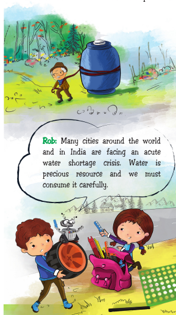
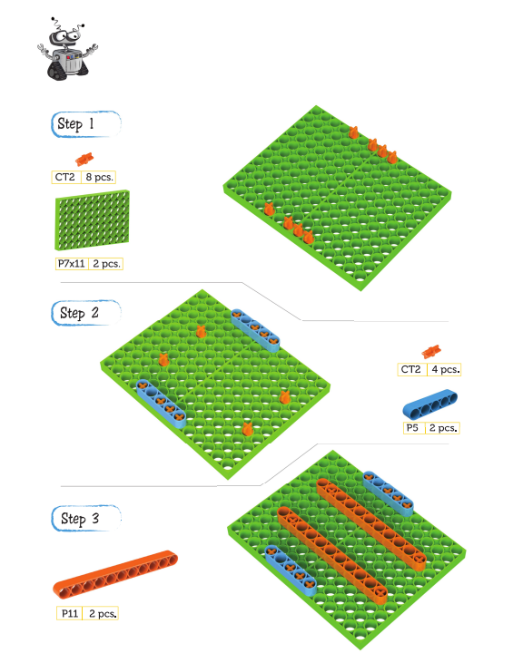
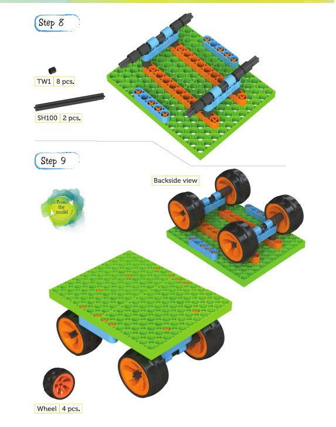
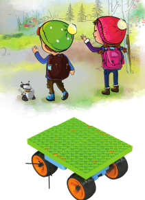

Kit: Wow! What a lovely feeling it is to be able to help those in need.
Laya: I agree. Now let's hurry, we have the North Pole to get to!
When you try and drag an object on any surface, there is a force that resists this. This force is called friction.
Friction can be very good as well! For example, rubber soles on shoes stop us from slipping. But when you are trying to move something, friction makes it very difficult.
Wheels help reduce friction since there is no sliding that takes place.
Wheels along with an axle are one of the simplest of machines and we use them everywhere. They make our work easy and since their invention thousands of years ago, they have been irreplaceable.
Rob: Now there's one more place where Laya and Kit have a problem with friction. Rob: Slides! They love swings and seesaws, but slides are their favourite. Except the times when there ig too much friction and you don't slide! So, can you think of ideas to make a slide that's always slippery.
What are the new words that you have learned today?
